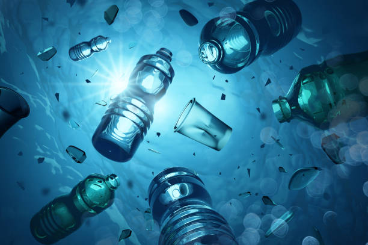
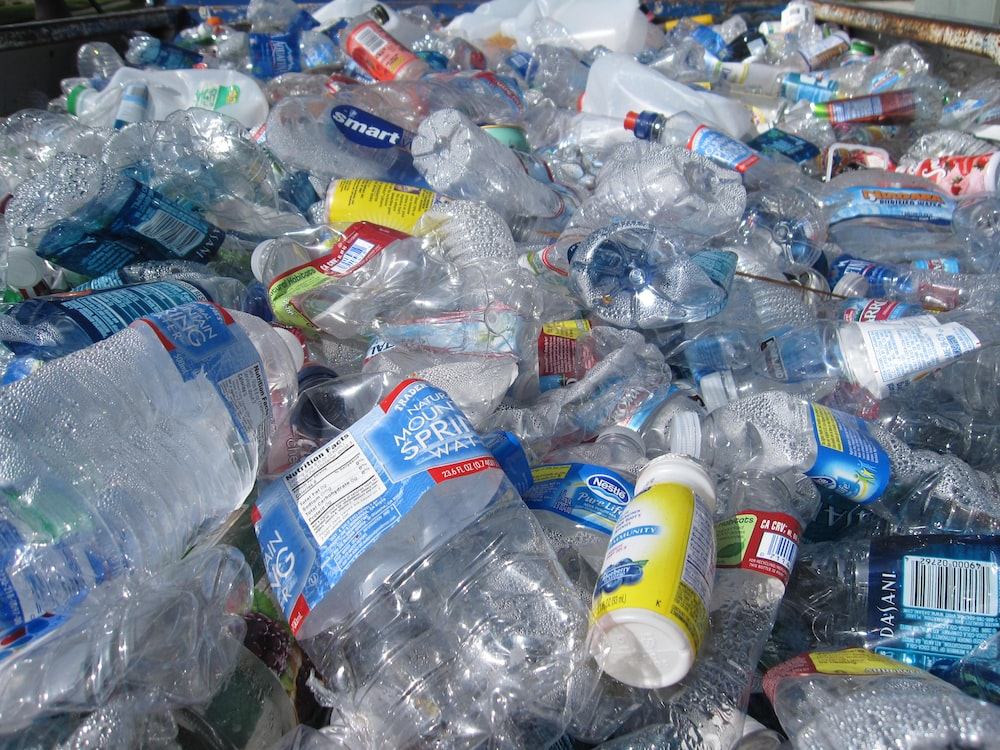
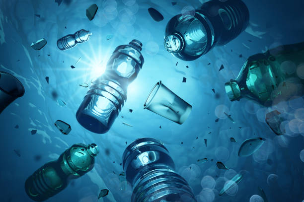
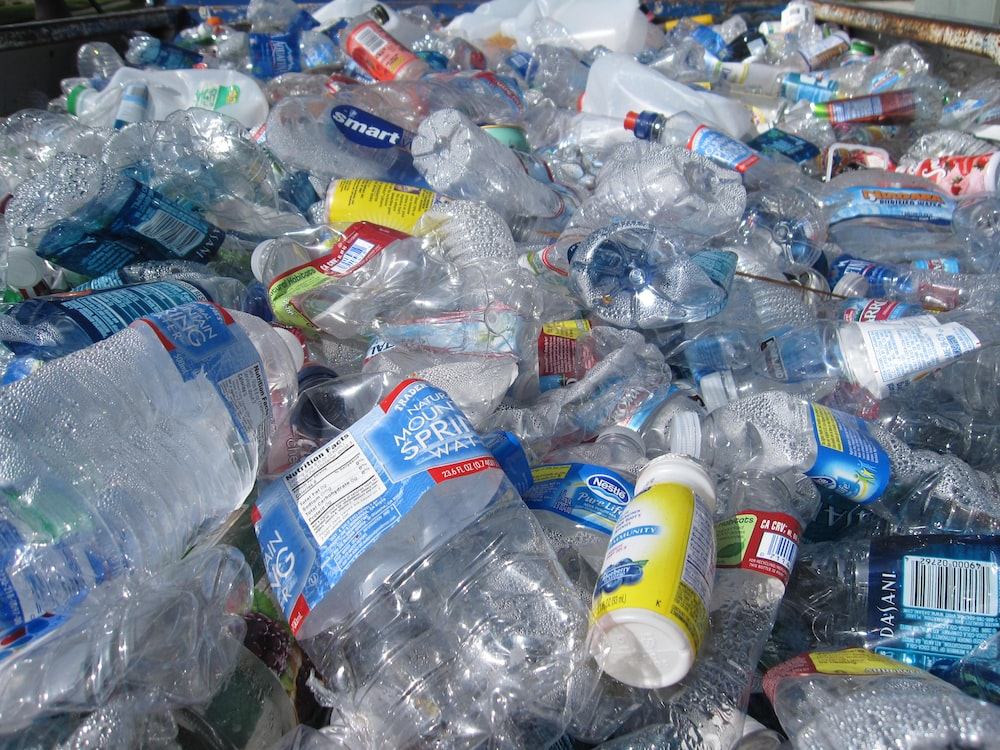
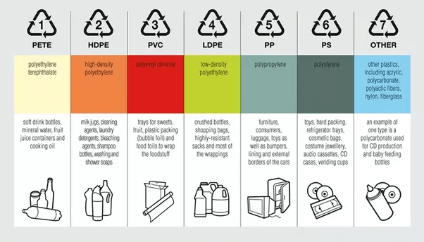
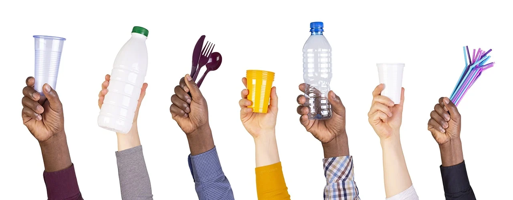
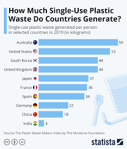
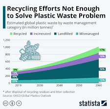
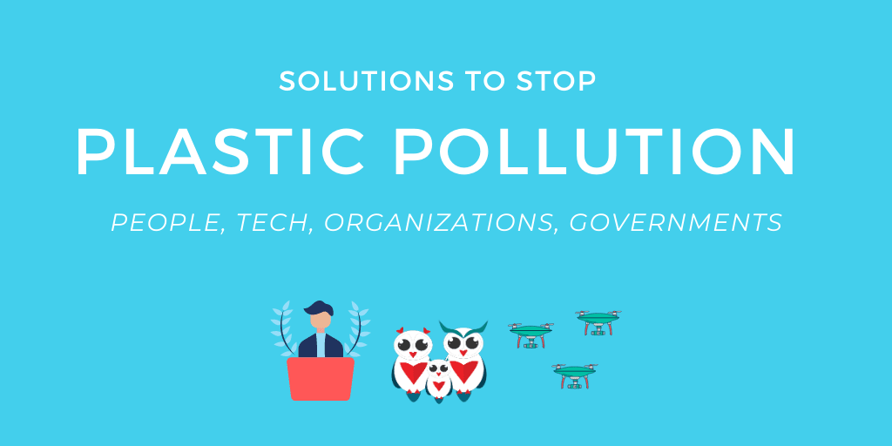

Polyethylene terephthalate which is also defined as PET or PETE is mainly used to manufacture the packaging material for food products such as fruit and drinks, and ravages due to their ability to keep the product from spoiling. It is lightweight, transparent, and also available in some colors. They are safer than the rest of the plastic. They are the most used plastic all around the world as have a high strength-to-weight ratio. Polyethylene terephthalate is easily recycled. Hence it is code as number 1.
Introduction
Plastic waste is a growing global environmental concern. It refers to discarded plastic products, packaging, and fragments that accumulate in landfills, water bodies, and natural environments. Plastic waste poses significant challenges due to its non-biodegradable nature and widespread use in various industries and daily life.Plastic waste, or plastic pollution, is ‘the accumulation of plastic objects (e.g.: plastic bottles and much more) in the Earth’s environment that adversely affects wildlife, wildlife habitat, and humans.’ It also refers to the significant amount of plastic that isn’t recycled and ends up in landfill or, in the developing world, thrown into unregulated dump sites.
In the UK, for example, over 5 million tonnes of plastic is consumed each year — and yet only 1 quarter of it is recycled. The three quarters that isn’t recycled enters our environment, polluting our oceans and causing damage to our ecosystem. In less developed countries, the majority of plastic waste eventually ends up in the ocean, meaning that marine animals are especially at risk. So much of what we consume is made of plastic (such as plastic bottles and food containers) because it’s inexpensive, yet durable. However, plastic is slow to degrade (taking over 400 years or more) due to its chemical structure, which presents a huge challenge. Reducing plastic consumption and raising awareness about plastic recycling is crucial if we are to overcome the problem of plastic waste and pollution on our planet.
Types of Plastic
 - Polyethylene Terephthalate (PETE)
- High-Density Polyethylene (HDPE)
- Polyvinyl Chloride (PVC)
- Low-Density Polyethylene (LDPE)
- Polypropylene (PP)
- Polystyrene (PS)
- Miscellaneous Plastics (Mix plastics)
Polyethylene Terephthalate (PETE)
High-Density Polyethylene (HDPE):
HDPE stands for high-density polyethylene, which is a thermoplastic polymer. It is mostly used for Hygiene products like plastic bottles, milk jugs, juice containers, shampoo bottles, body wash products, bleach bottles, cutting boards, and piping and is also used in children’s toys. With its lightweight, durability, and malleability, HDPE is a perfect material for injection molding. It’s easily recycled and is quite strong and thick when compared to PET. It is code as number 2. High-Density Polyethylene
Polyvinyl Chloride (PVC)
Polyvinyl Chloride can be defined as PVC it is a “thermoplastic” material. PVC offers a wide variety of applications and advantages across multiple industries in both rigid and flexible forms. In particular, Rigid PVC possesses a high density for plastic, making it extremely hard and generally incredibly strong. PVC has an extremely durable nature and is lightweight, making it an attractive material for construction, plumbing, and other industrial applications. PVC is very dense compared to most plastics, readily available, and cheap. And has excellent tensile strength. Due to being easily recyclable, its code as number 3 Polyvinyl Chloride
Low-Density Polyethylene (LDPE)
LDPE’s lower density and branched molecules provide it with somewhat different properties. It is resistant to impact (doesn’t break easily), moisture (waterproof), and chemical resistance (can stand up to many hazardous materials). It is mostly used as bags for groceries, newspaper delivery, dry-cleaning, bread, beverage cups, plastic wraps, and so on, plus product overwraps, bubble wrap, and cereal box liners. Plus there are many industrial and agricultural uses, particularly plastic film and packaging to protect all sorts of products. They are recycled into film plastic, furniture, plastic lumber, rubbish, and compost bins. Due to its different properties, its code is 4.
Polypropylene
Polypropylene also known as ( polypropene ), is a thermoplastic polymer used in a wide variety of applicants. In simple terms plastic is known for being a tough and rigid material. Polypropylene is a plastic that can be used as packaging material, Medical supplies, Plastic furniture, Automotive parts, and Plastic films. Polypropylene is one of the foremost common sorts of plastic utilized in the manufacturing process. The code for this 5
Polystyrene
Polystyrene may be a synthetic hydrocarbon polymer made up of the monomer referred to as styrene. It can either be solid or foamed form. You may be very familiar with the word Styrofoam (Thermocol ). Commonly used polystyrene is transparent, hard, and brittle. It is mostly used for Plastic forks, DVD cases, the housing of computers, model cars, toys, rulers, and hair combs, disposable cutlery and bowls, packing materials, and egg cartons. Due to various use its code as 6
Miscellaneous Plastics
Miscellaneous Plastics are plastic which is different from all plastic. It`s polycarbonate, polylactide, acrylic, acrylonitrile butadiene, styrene, fiberglass, and nylon. plastic CDs and DVDs Baby Bottles Large water bottles with multiple-gall capacity Medical storage containers Eyeglasses Exterior lighting fixtures. It is not very easy to interrupt down these plastics once they’re created unless they’re exposed to high temperatures.
Environmental Impact
The improper disposal and accumulation of plastic waste have severe environmental consequences. Plastic pollution harms marine life, terrestrial ecosystems, and overall biodiversity. Plastic debris can also leach harmful chemicals into the environment, leading to soil and water contamination. Additionally, plastic waste contributes to greenhouse gas emissions during its production and decomposition, exacerbating climate change. Every minute, the equivalent of one garbage truck of plastic is dumped into our ocean. Plastic pollution is a global problem. Approximately 7 billion of the 9.2 billion tonnes of plastic produced from 1950-2017 became plastic waste, ending up in landfills or dumped. Plastic pollution can alter habitats and natural processes, reducing ecosystems’ ability to adapt to climate change, directly affecting millions of people’s livelihoods, food production capabilities and social well-being. UNEP’s body of work demonstrates that the problem of plastic pollution doesn’t exist in a vacuum. The environmental, social, economic and health risks of plastics need to be assessed alongside other environmental stressors, like climate change, ecosystem degradation and resource use.
 
Impact on Planet: Biodiversity and Climate Change
Ecosystems and Biodiversity
Given the persistent nature of plastic and its toxicity, plastic pollution is a significant threat to biodiversity. It threatens ecosystems, animal and plant species, impeding their ability to deliver essential services to humanity. While the leakage of plastics into the ocean and the subsequent impacts of marine life has been most studied, plastic pollution also affect freshwater and terrestrial ecosystems.Indeed, plastic and chemical leakage into the environment may arise at various stage of the plastics life cycle, and the resulting pollutants are transported around the globe through air and oceans streams. Environmental degradation occurs in the upstream, as extraction, fracking, production of plastics and chemical additives release substantial amounts of toxic substances into the air and contaminate the local environment. Disposal is also problematic: incineration of plastic waste releases toxic chemicals and micro- and nano-plastics into the air, while landfills contaminate soil and water. All these elements then impact biodiversity both locally and globally.
Climate Change
As 99% of plastics are created from fossil fuel feedstocks, plastic production is tightly linked to the fossil industry. Petrochemicals are expected to become the largest driver of global oil demand growth from now through 2030. Greenhouse gases (GHG) are emitted throughout the plastic life cycle, thus threatening the ability of the global community to keep global temperature rise below 1.5°C. The rapid global growth of the plastic industry, largely fueled by natural gas, undermines efforts to reduce carbon pollution and prevent a climate catastrophe. Estimates indicate that GHG emissions from plastics could reach about 13% of the entire remaining carbon budget by 2050 (CIEL, 2019). At the UN climate negotiations in Egypt in November 2022 (UNFCCC COP27), various actors are advocating for stronger recognition of the interlinkages between plastics and climate change and urgent action to reduce plastic production and address the impacts of plastic on climate.
Impact on People: Health and Human Rights
Human Health
Humans are exposed to a large variety of toxic chemicals and microplastics through inhalation, ingestion, and direct skin contact, all along the plastic lifecycle. According to WWF, an average person could be ingesting approximately 5 grams of plastic every week. While the health impacts of plastics is still a rather new research area, scientific results to-date do indicate that the toxic chemical additives and pollutants found in plastics threaten human health on a global scale. Scientifically-proven health effects include causing cancer or changing hormone activity (known as endocrine disruption), which can lead to reproductive, growth, and cognitive impairment. Many of the toxic chemical additives have several other known health impacts, persist in the environment, and bioaccumulate in exposed organisms. Research also revealed that microplastics can harm our health, and act as vessels for pathogens to enter our system, increasing the spread of diseases.
Human Rights and Gender
Plastics also have serious impacts on people and their rights. Recent studies and reports have identified quite a large number of human rights impacts and outright violations throughout the life cycle of plastics. These impacts include toxic pollution released in manufacturing, exposure to toxic additives in plastic consumer products, waste mismanagement, disinformation campaign about the risks of and solutions to plastic pollution, and more. Meanwhile, the social and environmental cost of plastics is unevenly distributed around the globe and among social groups. Vulnerable groups, such as children, poorer communities, workers in the informal sector, and small island developing States, are disproportionately impacted. Human rights principles are thus critical to support legitimate and effective responses.
Solutions
Addressing the plastic waste crisis requires a multi-faceted approach. Solutions include reducing plastic consumption, promoting recycling and waste management systems, encouraging the use of biodegradable and sustainable alternatives, and raising awareness about the environmental impact of plastic. Individual actions, corporate responsibility, government regulations, and international cooperation are crucial for combating plastic waste and transitioning to a more sustainable future.
1. Reduce Your Use of Single-Use Plastics
Wherever you live, the easiest and most direct way that you can get started is by reducing your own use of single-use plastics. Single-use plastics include plastic bags, water bottles, straws, cups, utensils, dry cleaning bags, take-out containers, and any other plastic items that are used once and then discarded. The best way to do this is by a) refusing any single-use plastics that you do not need (e.g. straws, plastic bags, takeout utensils, takeout containers), and b) purchasing, and carrying with you, reusable versions of those products, including reusable grocery bags, produce bags, bottles, utensils, coffee cups, and dry cleaning garment bags. And when you refuse single-use plastic items, help businesses by letting them know that you would like them to offer alternatives.
2. Support Legislation to Curb Plastic Production and Waste
As important as it is to change our individual behaviors, such changes alone are insufficient to stop ocean plastic pollution. We also need legislation that reduces plastic production, improves waste management, and makes plastic producers responsible for the waste they generate. There are a variety of ways that you can support local, national, and international legislation that provide critical solutions to reduce plastic pollution. One such effort in the United States is the 2021 Break Free From Plastic Pollution Act, a comprehensive federal bill that aims to address the plastic pollution crisis, and there are a number of state level initiatives to introduce extended producer responsibility (EPR) legislation that makes plastic producers and distributors responsible for their products and packaging at the end of life. At the international level, hundreds of organizations and businesses successfully worked together with United Nations member states to enact a global plastics treaty, signed by 175 member states, that will set global rules and regulations to reduce plastic pollution. And legislation that limits, taxes, or bans unnecessary single use plastic items, such as plastic bags, takeout containers, and bottles, has been successfully enacted in many places globally, and you can support the adoption of such policies in your community too. Here is a comprehensive resource and toolkit on legislative approaches to limiting plastic bags, foodware, microplastics, and more.
3. Recycle Properly
This should go without saying, but when you use single-use (and other) plastics that can be recycled, always be sure to recycle them. At present, just 9% of plastic is recycled worldwide. Recycling helps keep plastics out of the ocean and reduces the amount of “new” plastic in circulation. If you need help finding a place to recycle plastic waste near you, check Earth911’s recycling directory. It’s also important to check with your local recycling center about the types of plastic they accept.
4. Participate In (or Organize) a Beach or River Cleanup
Help remove plastics from the ocean and prevent them from getting there in the first place by participating in, or organizing a cleanup of your local beach or waterway. This is one of the most direct and rewarding ways to fight ocean plastic pollution. You can simply go to the beach or waterway and collect plastic waste on your own or with friends or family, or you can join a local organization’s cleanup or an international event like our Global Ocean Cleanup or the International Coastal Cleanup.
5. Avoid Products Containing Microbeads
Tiny plastic particles, called “microbeads,” have become a growing source of ocean plastic pollution in recent years. Microbeads are found in some face scrubs, toothpastes, and bodywashes, and they readily enter our oceans and waterways through our sewer systems, and affect hundreds of marine species. Avoid products containing plastic microbeads by looking for “polythelene” and “polypropylene” on the ingredient labels of your cosmetic products (find a list of products containing microbeads here).
6. Spread the Word
Stay informed on issues related to plastic pollution and help make others aware of the problem. Tell your friends and family about how they can be part of the solution, or host a viewing party for one of the many plastic pollution focused documentaries, like A Plastic Ocean, Garbage Island: An Ocean Full of Plastic, Bag It, Addicted to Plastic, Plasticized, or Garbage Island.
7. Support Organizations Addressing Plastic Pollution
There are many non-profit organizations working to reduce and eliminate ocean plastic pollution in a variety of different ways, including Oceanic Society, Plastic Pollution Coalition, 5 Gyres, Algalita, Plastic Soup Foundation, and others. These organizations rely on donations from people like you to continue their important work. Even small donations can make a big difference! These seven ideas only scratch the surface for ways you can help address the growing problem of plastic pollution in the oceans. The important thing is that we all do something, no matter how small. For more ideas and resources, sign up to join our Blue Habits community of people worldwide committed to joyful daily actions that improve ocean health.